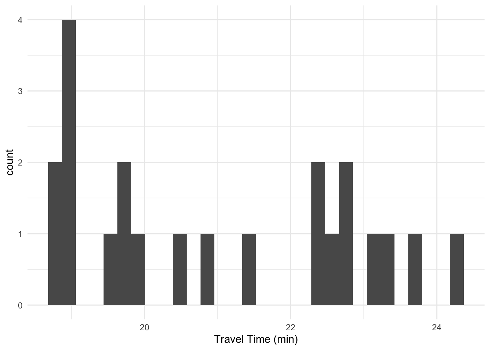
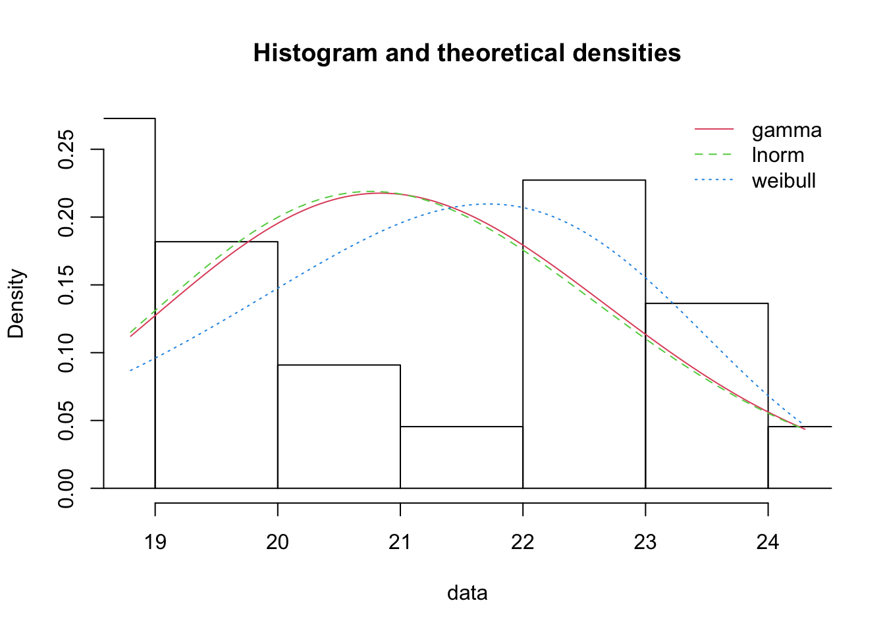
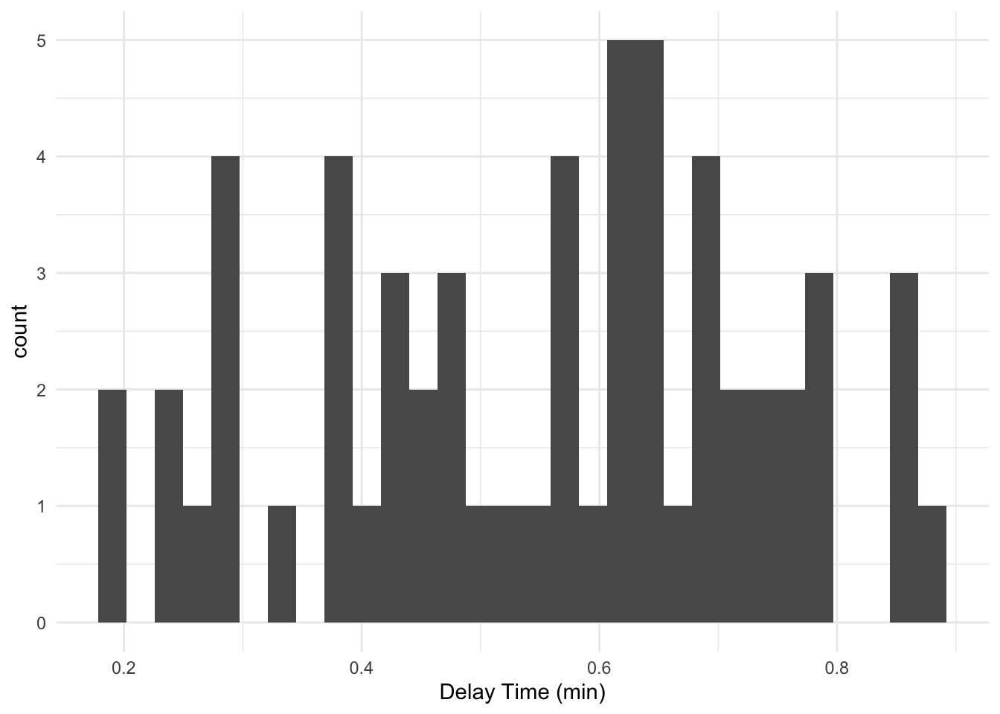
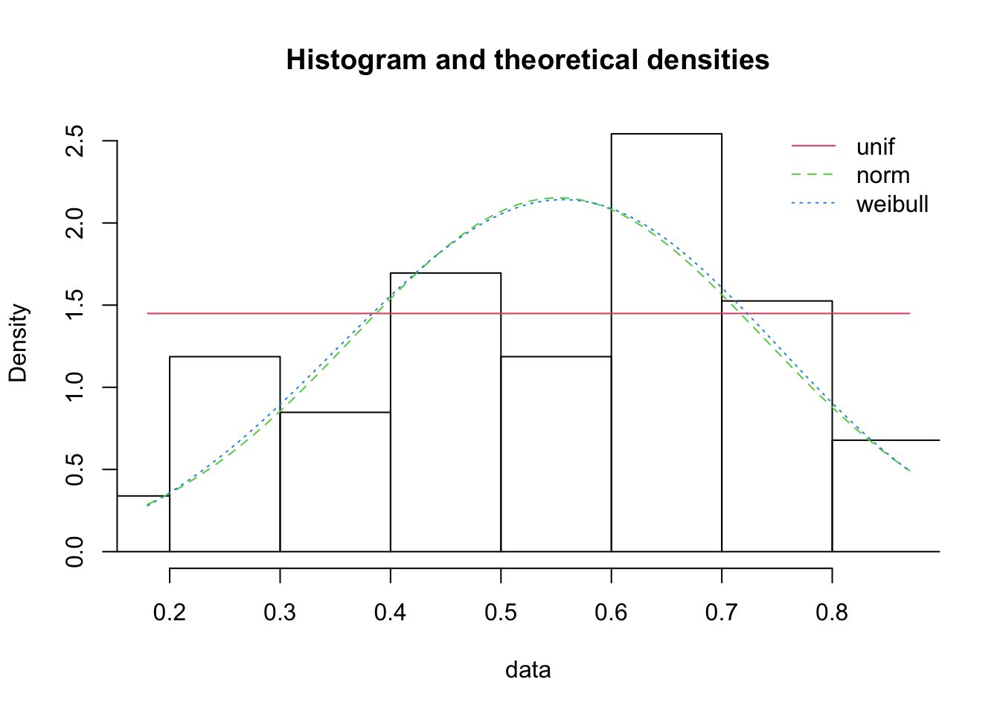
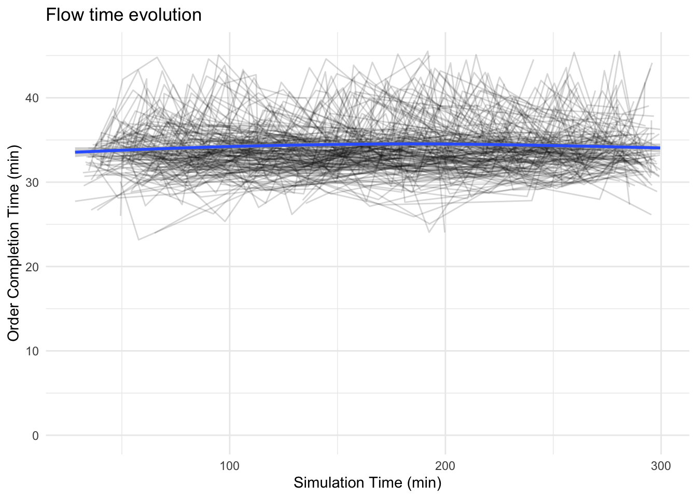
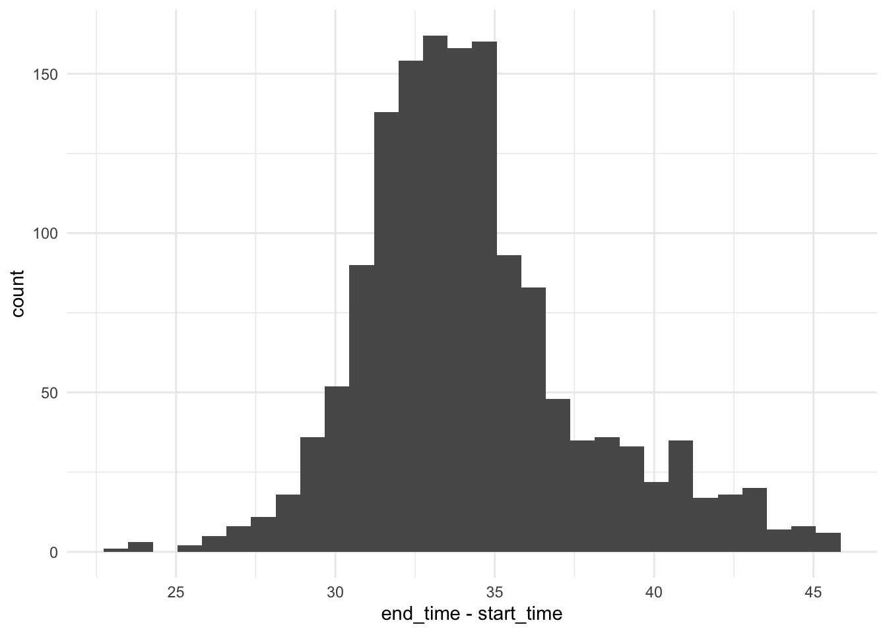

Project 1 Solution
IE384 Simulation Models in IE
1 Introduction
1.1 Objective
1.2 Problem Statement
2 Data Analysis
We fit several distributions to the two datasets determine which was the best fit so that the distributions could be used in the simulation rather than sampling the raw data. This gives a more complete view of possible values which could be observed. We use Pham’s Criteria (PC) as shown in Equation 1 to assess the best fit distribution as it accounts for the number of parameters in the distribution and the number of observations.
\[ PC = \left( \frac{n-k}{2} \right) \log \left(\frac{SSE}{n} \right) + k \left( \frac{n-1}{n-k} \right) \tag{1}\]
Our candidate distributions included; exponential, uniform, 2-parameter exponential, normal, lognormal, gamma, beta, Weibull, and Rayleigh.
2.1 Travel Time
The travel time data are shown in the histogram in Figure 1. We notice that the data is pretty evenly distributed across the range of observations. While there is a clump of obserations at the lower end, they seem to be balanced against the values at the higher end. It is not obvious which distribution would be the best representation of the data. Therefore we will fit all the specified distributions and compare model selection criteria. Note that several of the distributions explicitly limit the range of possible values we might sample. The uniform and beta distributions will only sample travel times between the minimum and maximum values. The two-parameter exponential will only sample travel times greater than the minimum. There is a sense of a physical limitation to the travel time. We may want a distribution which could return a sample of an especially long time which could represent bad weather or a traffic delay not related to traffic lights. On the other hand, if it takes a law-abiding driver around twenty minutes to make the trip, there really shouldn’t be any probability of observing a trip that takes less than fifteen minutes. Ultimately we will first examine the outcomes of the distribution fitting and then determine if additional context is needed to select the distribution which best represents the data.
The data is normalized for the beta distribution only so that it can take values from \(0\) to \(1\), with \(0\) representing the minimum observed time and \(1\) representing the maximum.
The results of the distribution fitting process are summarized below in Table 1.
| exp | unif | tpexp | norm | lnorm | gamma | beta | weib | rayl | |
|---|---|---|---|---|---|---|---|---|---|
| Number of Parameters | 1.00 | 2.00 | 2.00 | 2.00 | 2.00 | 2.00 | 2.00 | 2.00 | 1.00 |
| Log-Likelihood | -88.98 | -37.50 | -39.35 | -44.72 | -44.50 | -44.56 | 1.86 | -45.54 | -73.98 |
| AIC | 179.96 | 79.01 | 80.69 | 93.44 | 93.01 | 93.13 | 0.27 | 95.07 | 149.97 |
| BIC | 181.05 | 81.19 | 81.78 | 95.63 | 95.19 | 95.31 | 2.45 | 97.25 | 151.06 |
| SSE | 1.47 | 0.59 | 1.90 | 0.20 | 0.20 | 0.20 | 2.24 | 0.19 | 1.14 |
| PC | -28.41 | -75.84 | -51.40 | -98.22 | -98.47 | -98.39 | -47.97 | -99.26 | -31.04 |
The best three distributions using PC are gamma, lognormal, and Weibull with scores of \(-98.39\), \(-98.47\), and \(-99.26\), respectively. A comparison of these is shown in Figure 2. We can see the gamma and lognormal distributions result in nearly identical densities while the Weibull favors slighly longer travel times. It is also worth noting that the normal distribution is in the same range of PC. PC generally agrees with likelihood metrics with the exception of he beta distribution. However, the beta distribution had to be fit on normalized data and because its SSE and PC is not in competition for the best fit, we are comfortable dismissing it. While the likelihood metrics are better for the uniform and two-parameter exponential, we are first prioritizing PC and only using the other criteria for contextual information.

Our final choice for the travel time is the Weibull distribution with shape parameter, $=$12.42 and scale parameter, $=$21.86.
2.2 Red Light Delay
We repeat the process above for the red light data provided. This data represent the amount of time a delay will take for encountering any one red light along the way. This could be a very short delay if the light turns green just after stopping or it could be the longest possible delay if the car has to wait for the entire length of the red light. While any given signal light could have different red light lengths programmed, we only have data for all the signal lights together. Therefore we will have to assume the data is represntative of each light. Additionally, any idiosyncracies of a specific light will be smoothed out by the fact that each route has similar proabilities of enountering each light, so in that sense the data is represntative of the delays that could be encountered.

The results of the distribution fitting process are summarized below in Table 2.
| exp | unif | tpexp | norm | lnorm | gamma | beta | weib | rayl | |
|---|---|---|---|---|---|---|---|---|---|
| Number of Parameters | 1.00 | 2.00 | 2.00 | 2.00 | 2.00 | 2.00 | 2.00 | 2.00 | 1.00 |
| Log-Likelihood | -23.93 | 21.89 | -0.64 | 15.74 | 10.18 | 13.08 | 1.71 | 16.64 | 6.58 |
| AIC | 49.85 | -39.79 | 3.27 | -27.49 | -16.36 | -22.16 | 0.59 | -29.28 | -11.16 |
| BIC | 51.93 | -35.63 | 5.35 | -23.33 | -12.21 | -18.00 | 4.74 | -25.13 | -9.08 |
| SSE | 2.08 | 0.14 | 12.19 | 0.10 | 0.23 | 0.17 | 3.09 | 0.10 | 0.50 |
| PC | -97.08 | -349.48 | -91.47 | -368.20 | -321.37 | -339.59 | -171.14 | -367.48 | -138.07 |
The Weibull again provides a good fit with one of the best PC scores. This is not surprising as it is inherently flexible and can approximate a range of distributions depending on the shape parameter that is fit. The normal distribution is just slightly better on PC, but slightly worse on the likelihood-based scored (Log-Likelihood, AIC, BIC). The uniform distribution has the third best PC, but is the second worst BIC. The density comparison chart of the three distributions is shown below in Table 3.

The Weibull and Normal distributions densities are nearly indistinguishable. Ultimately we will select a normal distribution with mean, \(\mu=\) 0.55 and standard deviation, \(\sigma=\) 0.19.
3 Modeling Analysis
With distributions that represent the observed data, we can build both the simulation and analytical model. Additional information we will be considering:
- the number of orders per day follows a Poisson distribution, \(N \sim \mathcal{P}(\lambda=10 / day)\).
- if there is only one order, it takes the kitchen 10-minutes to prepare the food. If there is more than on order, then it can take up to 20-minutes.
- a driver must pass through nine signal lights, each with some probability of being red.
- the probability of any one light being red is between 20% and 60%
- average order amount is $75.00 with tips following a uniform distribution between $10 and $25
3.0.1 Assumptions
- We assume that this restaurant focuses on dinner so will assume each day deliveries are from 4:00 PM to 9:00 PM. So the order interarrival time follows an exponential distribution, \(A \sim \mathcal{E}(\lambda = 30\ minutes)\)
- The food prep time does not grow with the orders beyond the second order. That is if all nine orders are active, each order will take between 10 and 20 minutes to prepare. These are not sequential and the times are not resampled once an order is out. For example, when the first order is made, it will take 10 minutes to prepare it for delivery. If a second order comes in at nine minutes, the preparation time will take between 10 minutes and 20 minutes from the time it is ordered. If that time is initially 15 minutes, it will not decrease to 10 minutes once the first order is complete and there is again only one order in the system again
- If there are several orders at one time, they will all be completed concurrently.
3.0.2 Preparation and Delivery Time Model
\[ T = P + D + \sum_{i=1}^{9}(L_i R_i) \tag{2}\]
- \(T\): Total food preparation and delivery time distribution
- \(P\): takes value 10-minutes if there is a single order and uniformly random between 10- and 20-minutes, otherwise.
- \(D\): represents the typical travel time. \(D \sim \mathcal{W}(\alpha=\) 12.42 \(, \beta=\) 21.86\()\).
- \(L_i\): is a Bernoulli variable representing if light, \(i\), is red.
- \(R_i\): the delay encountered at red light, \(i\). \(R \sim \mathcal{N}(\mu=\) 0.55 \(,\sigma=\) 0.19 \()\)
3.1 Simulation Model
3.2 Analytical Model
4 Results

orders |> ggplot(aes(x=end_time - start_time)) +
geom_histogram() +
theme_minimal()
